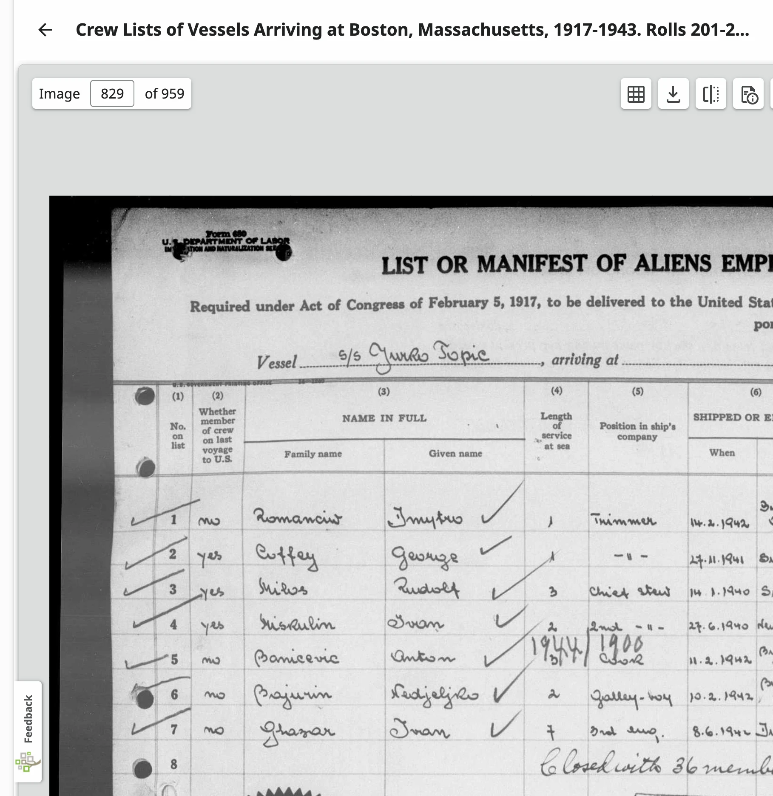
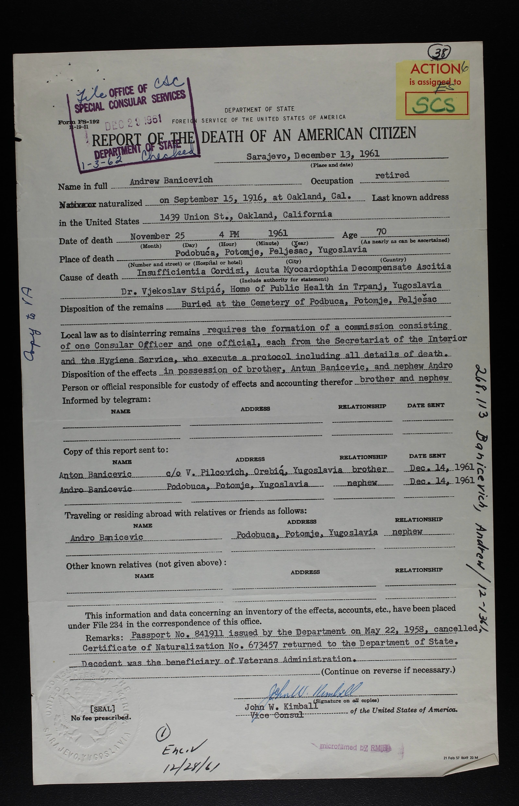

Where is "Mejet"? — and the ship that got Antun Banićević out of Yugoslavia in 1942
A page started to answer one question — where was "Mejet," the birthplace given on a 1944 naturalization petition — and grown, with the family's own quick replies, into the fuller story of how Antun Banećević/Baničević of Mljet became Antun Banicevich of Boston, then Lodi, California, arriving via a real, identifiable wartime voyage: Buenos Aires to Boston, by way of Durban, South Africa, on a Yugoslav steamer whose name the family had almost exactly right from the start.
"Mejet" is Mljet — the southernmost of the larger Dalmatian islands, part of Croatia today, part of the Kingdom of Yugoslavia when Antun was born there in 1913. That much was confirmed within minutes by the family itself. The more interesting find is the ship: the 1942 Boston crew list gives it, in the immigration officer's own hand, as the "S/S Jurko Topić" — a real, documented Yugoslav-flagged steamer, later renamed Korenica — matching almost exactly what the family had passed down as "the S.S. Jurko Tropic."
Where Mljet actually is
A schematic locator, not a survey map — enough to place Mljet against the landmarks this page keeps naming: Dubrovnik, Pelješac (Orebić and Potomje), and Korčula, home to Smokvica, the village the genealogist who replied lives in.
Mljet sits at the southern edge of the Dalmatian island chain, closer to Dubrovnik than to any larger city — an island reached by ferry, not by a land route, then as now. Smokvica is not on Mljet — it's a village (and municipality) on Korčula, the next island over, easy to conflate since both carry the same concentrated Baničević population. Potomje and Orebić, on Pelješac just across the strait from Mljet, turn up separately below in a 1961 consular record tied to Antun's probable brother — worth having on the map before that document is introduced.
The original question
Posted asking for help placing a birthplace found on a 1944 naturalization petition:
"Good day. I'm trying to discover where a location currently is and I'm unsure if it's in modern day Croatia. My ancestor is Antun BANECIVIC/BANICIVIC and upon naturalization in the U.S. May 6th, 1944 became BANICEVICH. He states in his petition to naturalize he arrived in Boston Massachusetts on the S.S. jurko Tropic in 1942 via South Africa which I located the record but it lists him as Onton BANECIVIC. He lists himself as Race: Dalmatian and Ethnicity: Jugoslavian. His petition states he was born in Mejet, Jugoslavia, August 9th, 1913. I get a lot of stuff was going on around that time but have no idea where Mejet is or if it's Mljet or some either place!" — original post, as written
The replies — the family and a Mljet genealogist got there first
Posted almost immediately after the question went up, from people who already knew pieces of this story:
"Should be Banicevic, and Mljet is an island in Croatia." — reply
"Smokvica, Croatia where I live there is huge amount of Baničević please message me who you are looking for. I have family genealogical records for here and others villages on the island as I'm a genealogist. His ship record coming over I believe said that but was registered as something crazy different!!" — reply, from a genealogist in Smokvica, on Korčula
"His WWII reg card says Mljet. (side note: i put the surname in Actacroatica and it only came up with BARICEVIC. The online phone book also has no BANECIVIC or BANICIVIC.)" — reply, from the original poster
"Janis Shampay i found him via so many different surnames so I'm not shocked it was listed as that! Thank you for finding that!! I've spent some time between Family Search and Ancestry I must've missed that variation! The ship manifest actually totally butchered his surname but if you look at the manifest and not the interpretation of the name it lines up with what he has used." — reply, from the original poster
Three of these four turned out to be exactly right — confirmed independently below, not just taken on faith: Smokvica (on Korčula, not Mljet — see "Where Mljet actually is," above) really does carry a concentrated Baničević population, the WWII draft card's "Mljet" matches the naturalization petition's "Mejet," and FamilySearch's own index really does render the ship name almost unrecognizably, even though the original crew-list image itself turns out to be clear (see below).
Found: the actual crew-list record, and the ship itself
FamilySearch indexes an "Anton Banicevic" in Massachusetts, Suffolk, Boston Crew Lists, 1917–1944 — immigration 1942, Boston, birth 1913, Yugoslavia. That record's own original document image is the single best source on this page: a "List or Manifest of Aliens Employed on the Vessel as Members of Crew," for a ship the immigration clerk wrote, in his own hand, as the S/S Jurko Topić.
| The ship | S/S Jurko Topić — FamilySearch's own index transcribes this as "S S Turke Topic," a misreading of the same handwriting; the image itself is clearer, and reads as a name, not a place. A Croatian shipping-company history (Atlantska Plovidba, Dubrovnik) records a real steamer by this exact name, later renamed Korenica when it joined that company's fleet in 1956 — independent confirmation this was a real, documented Yugoslav-flagged vessel, not a garbled ship name that never existed. (Atlantska Plovidba company history) |
|---|---|
| His entry on the crew list | Line 5, plainly legible: family name Banicevic, given name Anton. Position: Cook. Age 29 — consistent with an August 1913 birth on a mid-1942 voyage. Race: Dalmatian — the exact term the naturalization petition itself later used. Nationality: Jugoslav[ian]. An annotation added later beside his line ("1944/1900") is likely a subsequent clerk's cross-reference, not part of the original 1942 entry. |
| Where he'd shipped from | "Shipped or engaged": 11 Feb 1942, Buenos Aires — meaning he signed onto this ship's crew in Argentina months before the Boston arrival, not directly from Yugoslavia. The Axis occupation of Yugoslavia (April 1941) had already happened by then; a Yugoslav-flagged merchant ship still sailing the South Atlantic in 1942 would have been operating for the Allied side, out of reach of the occupation. |
| The South Africa leg — confirmed directly | A pasted American Consulate visa stamp on the same document reads "Durban, South Africa … SEEN for the journey to the U.S. … via [this ship] to Boston," signed and dated 9 June 1942. This is the "via South Africa" the naturalization petition later summarized in one phrase — now dated and placed at a named port, a stop on the ship's own route between Buenos Aires and Boston, almost certainly to avoid the much more heavily U-boat-patrolled North Atlantic crossing routes in 1942. |
| The Boston arrival itself | A U.S. Public Health Service surgeon's certification on the same page, dated Boston, Massachusetts, 16 July 1942, certifies "36 aliens listed hereon examined and no certifiable disease found" — matching a handwritten note earlier on the same page, "closed with 36 members of crew including master." This is the actual arrival date the petition's "1942" rounds down from. |

The rest of the same page names six other crew, in case any surname means something to a reader: Dmytro Romanciw (trimmer) and George Coffey and Rudolf Milos (chief steward) round out lines 1–3; Ivan Miskulin (2nd —, shipped New York 27 June 1940 — on this ship's roster far longer than Antun had been); Nedjeljko Bajurin (galley-boy, shipped Buenos Aires 10 Feb 1942, the same port and month as Antun); and Ivan Ghazar (3rd engineer, shipped 8 June 1942, race given as "Croatian" rather than "Dalmatian" — a reminder the two labels were being used somewhat loosely, by this ship's clerk, for the same broad Yugoslav coastal population).
Confirmed: Korčula's Smokvica, and the Baničević name
Independent records, found separately from anything the family or the Smokvica genealogist supplied, back up her reply — and turn up the correction above along the way.
| Smokvica really is a Baničević village — on Korčula | Croatian sources (including a Catholic priest and local historian, don Božo Baničević, himself born in Smokvica in 1937 and author of the monograph Smokvica kroz vjekove, "Smokvica Through the Centuries") confirm Smokvica sits on Korčula, not Mljet. A completely different Banicevic — Donko (Domenico) Banicevic, born 13 June 1879 in Smokvica, Yugoslavia, naturalized in Sacramento/Alameda County, California in the 1910s–1940s — turns up repeatedly across California naturalization indexes, entirely independent of Antun's own line. That a second, unrelated Banicevic family from the same named village emigrated to the same general part of California is exactly the pattern the Smokvica genealogist's reply predicted: a small village that sent many of one surname abroad — that village just isn't Antun's own island. |
|---|---|
| The surname's own instability, independently confirmed | A FamilySearch search across every spelling turns up Banicevic, Banicevich, and (per the original poster's own note) Baricevic as the form Acta Croatica's own surname database returns — three renderings of what is very likely one Dalmatian surname, consistent with a name that had no single fixed Latin-alphabet spelling before it crossed into English-language records repeatedly, by different clerks, over decades. |
| Dubrovnik-Neretva County — the right jurisdiction | Mljet, Korčula, and Pelješac all fall under modern Croatia's Dubrovnik-Neretva County — the same county that also produced, per an unrelated Find a Grave-sourced obituary record, a Jakov Banicevic born in Čara (also on Korčula, near Smokvica) in 1933. This is the right regional cluster for the name: the islands and coast immediately around Dubrovnik, not scattered across Yugoslavia at random. |
Found: Antun's later American life — Boston to California
The Social Security Death Index and a residence database both independently confirm a single, consistent Antun Banicevich living out a full life in the United States after the 1942 arrival — previously undated on this page's own starting question.
| Birth date match | Social Security Death Index: Antun Banicevich, born 9 August 1913 — an exact match, to the day, with the naturalization petition's own stated birthdate. This is strong confirmation these are the same person, not a same-named coincidence. |
|---|---|
| Death | Died 15 April 2006, in Lodi, San Joaquin County, California — a 92-year lifespan from Mljet to California's Central Valley. |
| San Pedro, before Lodi | A separate residence-history record places an Antun Banicevich in San Pedro, California as late as December 2004 — San Pedro's Los Angeles Harbor district has one of the largest Dalmatian-Croatian immigrant communities in the United States, built substantially by fishermen from exactly this stretch of the Adriatic coast, and home to the Dalmatian-American Club, founded 1926. A wartime merchant seaman from Mljet settling among San Pedro's Dalmatian fishing community, before an eventual move inland to Lodi, is an entirely plausible and well-worn path — not yet confirmed by a document that states the connection outright, but consistent with everything else on this page. |
Found: two more brothers — Andrew and Joseph Banicevich, of Oakland
FamilySearch's full-text search — which reads the actual OCR'd text of unindexed documents, not just indexed name fields — turns up a U.S. State Department consular record that names Antun Banicevic as "brother" in plain language. That record, followed onto Findmypast, leads straight to a second brother living with the first. This is the richest vein of documents found for this page, and it opens a whole branch of the family that the naturalization petition alone never could have shown.
| The document | "Report of the Death of an American Citizen," U.S. Department of State, Office of Special Consular Services, filed from the Consulate in Sarajevo, 13 December 1961 — part of FamilySearch's Central Decimal Files: United States. Vital Records, 1910–1963. (FamilySearch record) |
|---|---|
| The decedent | Andrew Banicevich, naturalized 15 September 1916 at Oakland, California — a full generation before Antun's own 1942 arrival. Last U.S. address: 1439 Union St., Oakland, California. Retired. His own WWI draft card (registered 5 June 1917, Oakland) gives an exact birth of 25 January 1890 and birthplace "Dalmatia, Austria" — independent of, and consistent with, the death report's "age 70." In 1917 he was 27, single, working as a waiter for the Southern Pacific Railroad in Oakland, with no dependents. (Findmypast transcript) |
| His death | Died 25 November 1961, 4 PM, at Podbuča, Potomje, Pelješac, Yugoslavia — cause given as acute cardiac insufficiency with ascites. Attending physician: Dr. Vjekoslav Stipić, Home of Public Health, Trpanj. Buried at the cemetery of Podbuča, Potomje, Pelješac — meaning Andrew had returned to the old country, like many Dalmatian-American immigrants of his generation did in retirement, and died there rather than in California. |
| Antun, named directly | "Disposition of the effects: in possession of brother, Antun Banicevic, and nephew Andro [Banicevic]." A copy of the report was sent to Anton Banicevic, c/o V. Pilcovich, Orebić, Yugoslavia — brother, dated 14 Dec 1961. Orebić sits directly across the strait from Korčula, on the Pelješac peninsula — reachable from Mljet by boat, and squarely inside the same tight cluster of villages this whole page keeps returning to. |
| A nephew, also named | Andro (Andrija) Banicevich, address Podbuča, Potomje, Yugoslavia — recorded both as the person residing with Andrew abroad and as a second heir to his effects. If any Banicevic descendants still live in Potomje or Podbuča today, Andro (or his own children) is the most direct named thread to them. |
A third brother, found through the 1940 census
Andrew was not living alone in Oakland — and the census entry that shows this also names a possible mother.
| The 1940 household | 3 April 1940, Oakland, Alameda County: Joseph Banicevich (head, single, age 53, b. 1887, Yugoslavia), Andrew Banicevich (brother, single, age 48, b. 1892, Yugoslavia — the census taker's age/year estimate differs slightly from the WWI card's exact 1890, as census ages often do), and a roomer, Ulaho Vuinac (single, age 56, b. 1884, Yugoslavia) — a third Dalmatian immigrant sharing the household, not yet otherwise connected to this family. (Findmypast transcript) |
|---|---|
| Joseph Banicevich, independently | Born 17 June 1886, died 9 March 1951 in Alameda County, per the California Death Record Index — a third brother, seven years older than Andrew and 27 years older than Antun, who by this record never returned to Yugoslavia and died in California instead. (Findmypast transcript) |
| A possible mother's name | That same death index record carries a "father's last name" of Banicevich (as expected) and a "mother's last name" given as Paulna — almost certainly a data-entry quirk carrying her given name (likely Paulina) into the wrong field, rather than an actual surname. Worth treating as a real lead on the mother's first name, not yet her maiden surname. |

Found: the actual arrivals — and the word "Austria" breaks it open
Mljet and Pelješac were both part of Austria-Hungary until 1918 — so American clerks in the 1900s–1910s almost always recorded these immigrants' birth country as "Austria", never "Croatia" or "Yugoslavia" (those names come later, and only get applied retroactively by later indexers). Searching under that historical country name, rather than the modern one, turns up three more direct hits.
| Joseph's own arrival, in his hand | An Ellis Island manifest for "Guiseppe Banicevic," age 17, arrived 16 May 1904 aboard the La Bretagne (French Line, out of Le Havre) — traveling with a friend, "M. Jugovich." His listed home address: "Padsbuce, Austria" — an indexer's phonetic stab at Podbuča, the exact village Andrew's 1961 death report names. This is the strongest single piece of evidence tying this family to Podbuča/Potomje specifically, independent of Andrew's later record. (FamilySearch record) |
|---|---|
| The same arrival, one day later, under "Joe" | A separate index — United States, Index to Alien Case Files, 1940-2003 — carries "Joe Banicevic," born 11 June 1886, Austria, immigrated 15 May 1904 to New York — a near-exact match to Joseph's 17 June 1886 birthdate (California death index) and one day off from the Ellis Island date above, the kind of one-day drift normal between an arrival date and an inspection date. This record carries an actual alien registration number (2852490) — a real, orderable file. (FamilySearch record) |
| Andrew's own first arrival, previously unknown | Andrija Banicevic, born 1890, "Austrian," arrived Philadelphia, 1907 — three years after Joseph, and nine years before his Oakland naturalization. This is a new fact: Andrew's own path to America ran through Philadelphia at 17, not directly to California. (Pennsylvania, Philadelphia, Passenger List Index Cards, 1883–1948, via FamilySearch) |
The line, as far as it's confirmed
Three brothers, a possible mother's first name, a nephew, and a wide-open branch on the Mljet side — exactly the shape a page like this should show honestly, rather than padding out with guesses.
No spouse or children for Antun himself have turned up in any record checked for this page. Mljet's own parish registers (not the Smokvica genealogist's, since her own village is on a different island) remain the most likely place that changes for Antun's direct line; for the Pelješac side, a living Banicevic/Banićević family in Potomje or Podbuča today — quite possibly descended from Andro — is now a second, independent lead worth writing to. Joseph's own California death record is the one document so far to name a parent at all, even at one remove through a mistranscribed field — a real naturalization file or a Croatian parish baptismal record for any of the three brothers would very likely confirm both parents' full names outright.
Where to look next
| Write back to the Smokvica genealogist anyway | She lives on Korčula, not Mljet, so her own family records are unlikely to cover Antun's exact village directly — but she is a working genealogist in the same tight regional cluster, already offered help, and may know who holds Mljet's own parish records or have a contact there. Worth following up with Antun's full name, both surname spellings, and his 9 August 1913 birthdate, with the Mljet/Korčula distinction made clear from the start. |
|---|---|
| Re-pull the naturalization petition itself | The 6 May 1944 petition (Massachusetts, almost certainly Boston's federal district court) is the origin of everything on this page but hasn't itself been re-examined here — it would likely give a specific parish or hamlet on Mljet beyond "Mejet," plus a witness or two who may themselves be traceable. Boston's naturalization petitions from this period are indexed at the National Archives at Boston and increasingly digitized on FamilySearch and Ancestry. |
| Find the WWII draft registration card again | The family's own reply says it gives "Mljet" directly — independently confirming the naturalization petition's "Mejet" without needing Mljet-vs-Mejet reasoning at all. Re-locating that specific card (likely FamilySearch's United States, World War II Draft Registration Cards collection, under whichever surname spelling was on file locally) would put a primary source under a fact currently resting on the family's own say-so. |
| Confirm the San Pedro/Lodi connection | A California obituary, a Dalmatian-American Club membership record, or a Lodi-area Catholic parish record would confirm whether the San Pedro Antun Banicevich (2004) and the Lodi death record (2006) really are the same continuous life, and might name a spouse, children, or a specific fishing vessel — the kind of detail that would turn "consistent with the pattern" into a documented fact. |
| Follow the Pelješac branch | Andrew Banicevich's Oakland naturalization file (Certificate No. 673457, issued via a September 1916 naturalization) and his 1958 passport (No. 841911) are both now specific, citable record numbers — either could independently confirm his own birthplace and, with luck, his parents' names. And a living Banicevic/Banićević family in Potomje or Podbuča today, quite possibly descended from nephew Andro, is a second live local contact worth writing to, alongside the Smokvica genealogist. |
| Pin down Joseph, and the mother's name | Joseph Banicevich's own California death certificate (not just the index transcript used here) would very likely spell out the "Paulna" field correctly and may give his exact birthplace, since California death certificates of this era often name the informant and their relationship. Alameda County's Recorder's Office or the California Department of Public Health Vital Records office are the two places to request it from, citing his 9 March 1951 death date. |
| Ulaho Vuinac, the roomer | Sharing Joseph and Andrew's Oakland household in 1940, born Yugoslavia c. 1884 — not yet connected to this family by blood, but exactly the kind of fellow Dalmatian boarder who often turns out to be a cousin, in-law, or someone from the very same home village. Worth a quick independent search in his own right. |
| Finish the Janjina parish register search | The right register has been identified and opened — Roman Catholic parish of Janjina (covers Potomje/Podbuča), Matična knjiga 1733–1930, births 1871–1904 specifically on FamilySearch film 005498307 (518 images). It's handwritten, unindexed, and — this is the real complication — organized as separate mini-ledgers per hamlet (Janjina proper, a filial book for Popovine/Opline, and others) rather than one straight chronological run, so "page number tracks with year" only holds within one hamlet's own block. Neither Joseph's (1886) nor Andrew's (1890) actual baptismal entry has been located yet. Someone reading Italian/Croatian cursive at native speed, or a direct request to the parish/diocese naming Podbuča specifically, would very likely succeed where page-by-page browsing has stalled. |
Ready to send
One reply, drafted to name exactly what's been found so far and exactly what's still needed — the genealogist in Smokvica already offered, and this version is careful to flag that her own village is on Korčula rather than Mljet itself, in case that changes what she can check directly.
"Thank you so much for the offer — this would help enormously. I should mention up front: I understand Smokvica is on Korčula, and the family I'm researching is from Mljet itself — so this may be outside your own direct records, but I'd still value anything you can tell me or point me toward. The ancestor is Antun Banečević/Baničević, born 9 August 1913 on Mljet (his 1944 U.S. naturalization petition gives only 'Mejet, Jugoslavia,' and his WWII draft card is recorded as saying 'Mljet' directly — no village named yet). He left for the United States by 1942, arriving in Boston that July as a crew member — Cook — on the steamer Jurko Topić, having signed on in Buenos Aires in February 1942 and passed through Durban, South Africa in June 1942. He naturalized in Massachusetts on 6 May 1944 as Antun Banicevich, and appears to have later lived in San Pedro, California before dying in Lodi, California on 15 April 2006. U.S. records also point to two probable brothers: Andrew Banicevich (b. 25 Jan 1890, emigrated to Oakland by 1916, later returned to Potomje/Podbuča on Pelješac, where he died in 1961) and Joseph Banicevich (b. 17 Jun 1886, died in Alameda, California in 1951 — his death record hints at a mother's first name, possibly 'Paulina,' but not yet her maiden surname). Do you know who holds Mljet's own parish registers, or anyone there who might? Any help placing the family's exact village, or the parents' full names, would mean a great deal. Thank you again for reaching out." — draft, ready to send in English
A note on names and places — nothing on this page stayed spelled the same way twice
Every real find on this page came from searching under a spelling, a place, or a country name that wasn't the obvious one. Worth setting down plainly, since the next person searching this family will hit the same walls.
| The surname | Banečević, Baničević, Banicevic, Banicevich, Baricevic — five spellings of what is very likely one Dalmatian surname, and every single one turns up real records for this exact family somewhere on this page. Acta Croatica's own surname database only recognizes "Baricevic." FamilySearch's index of the 1942 crew list reads it correctly once the scan is clear enough, but a lower-quality copy of the same document could easily have been transcribed as something unrecognizable. Search every spelling, every time — never stop at the first one that returns a result. |
|---|---|
| Given names | Antun appears as Antun, Anton, Onton, Antonio, Anthony; Andrew as Andrew, Andrija, Andrea, Andro (the last of these actually names his son, not Andrew himself — a real trap); Joseph as Joseph, Joe, Giuseppe, Guiseppe. Immigration and naturalization clerks routinely translated or anglicized a given name on the spot, sometimes differently on two documents from the same year for the same person. |
| Place names | Mejet / Mljet (the naturalization petition's own spelling vs. the actual island); Podbuča / "Padsbuce" (a clerk's phonetic guess at an Ellis Island manifest, only recognizable once you already suspect the answer); Smokvica exists on both Korčula and, unrelatedly, near Mljet's own waters — a real trap this page walked into and had to correct. When a place name looks garbled, don't discard it — say it out loud. |
| The country | Mljet and Pelješac were both part of Austria-Hungary until 1918. Every American record from before that date — ship manifests, WWI draft cards, naturalization files — gives the birth country as "Austria," sometimes "Austrian," never "Croatia" or "Yugoslavia." Those later names only start appearing in records from the 1920s onward, once Yugoslavia existed to be named. Search "Austria" for anyone born before 1918 in this region — searching the modern country name alone will silently miss real, correctly-filed records, including the single most important find on this page (Joseph's own Ellis Island arrival). |
None of this is unusual for Dalmatian-American research specifically — it's the ordinary condition of tracing anyone who crossed from a multilingual, multi-alphabet, multiply-renamed corner of the Adriatic into English-language American recordkeeping. The records are there. They just aren't filed under the name you'd guess first.